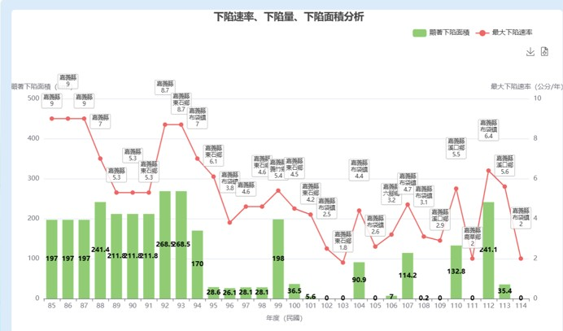
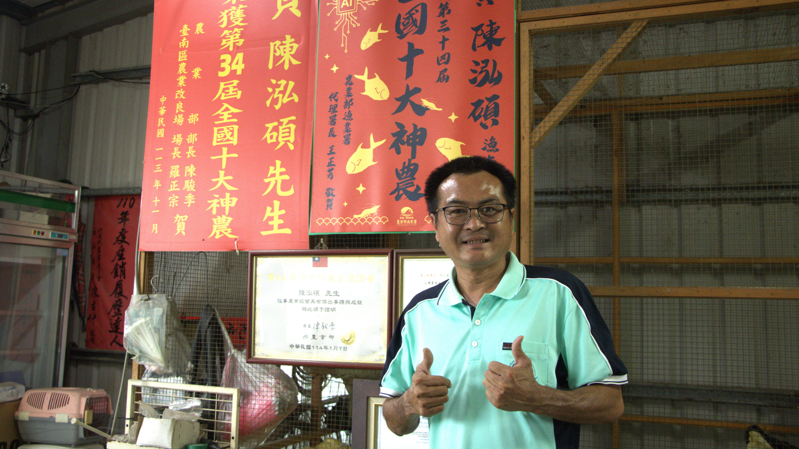
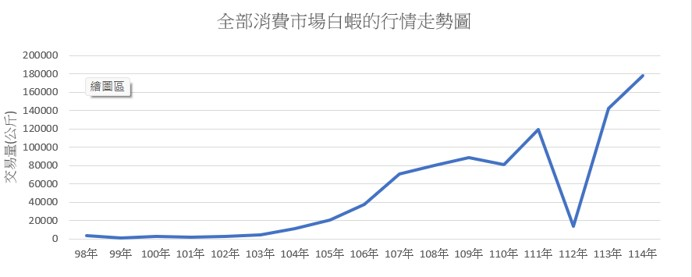

嘉義的沿海地區是白蝦養殖的重要區域，當地養殖白蝦有個特色，透過智慧養殖的方式能夠監測水質，機器投餵減少人力的成本，也能確保白蝦的健康以及混養狀況，而嘉義就有一位獲得全國百大青農的漁民透過智能養殖的方式來養殖白蝦，將白蝦存活率提高，產量增加。
從養蝦王國到智慧養殖的產業轉型之路
曾經擁有養蝦王國之稱的台灣，在1987年養殖蝦的產量以9.5萬噸占全球的四分之一，因為病毒威脅、環境惡化以及進口蝦的價格低廉，讓國產蝦的市場面臨危機。
嘉義是養殖白蝦的重要養殖產區，早期主要以養草蝦為主，但因為草蝦的疾病問題，且白蝦對於白點病的抗體較草蝦強，養殖業者這才漸漸轉型改養殖白蝦為主。
傳統養殖為了追求白蝦的生長速度與存活率，會抽取地下水與海水混合，調製成半淡海水供白蝦養殖。然而，長期大量抽取地下水，也造成嘉義部分沿海地區地層下陷問題日益嚴重。

1996年起，當地逐漸發展白蝦養殖產業，並結合虱目魚、草魚等魚類進行混養，以拓展養殖方式，透過混養的方式能夠讓多物種共生，養殖過程也堅持不添加藥物，監測水池的顏色及酸鹼值和溶氧量。

2019年，嘉義縣政府推動智慧養殖設備補助計畫，補助漁民購買水質監測器、智能電箱等等，幫助嘉義縣的漁民能夠透過智慧養殖來管理魚塭。透過手機就能觀測魚塭的水質、溶氧量，遇到問題時能夠及時處理，避免判斷錯誤，反而造成更大的損失。透過智能養殖的方式不僅改善人力問題，也提升白蝦的存活率，讓養殖管理從靠經驗逐漸轉向用數據，成為白蝦產業面對環境與市場挑戰的一種轉型方式。
青年返鄉 將傳統漁業朝現代化進步

出生在嘉義縣布袋的陳泓碩，目前為嘉義縣養殖漁業發展協會的理事長，也是中華民國養殖協會的常務理事。原本從事倉儲業的他，因為工作關係和家人分隔三地，生活開銷也負荷不了，才決定一家人回到家鄉。民國98年，他回到嘉義從事養殖漁業。當時因為對於這個行業不熟悉，每個人的方式也都不同，所以遇到了許多瓶頸。後來他參加政府舉辦的活動，有任何養殖問題都可以詢問，也重新學習相關知識、把基礎打好，白蝦養殖才漸漸好轉起來。
民國103年，他開始思考自產自銷。過去的養殖方式會使用一些動物用藥，但他認為如果要自產自銷，就應該轉型為生態養殖。於是他向專家老師詢問，將原本的養殖方式轉為生態養殖，也將黃金鯧和白蝦一起混養。但因為黃金鯧對於水質的要求非常高，剛開始的死亡率極高，後來才嘗試智慧養殖的方式，利用水質檢測儀器觀察，情況才逐漸變好。
在陳泓碩的努力下，嘉義縣政府推出智慧漁業的推動，隔一年漁業署開始啟動智慧漁業的補助並持續至今，而他本人也一直與多家機構持續研究，推出更完善的設施。陳泓碩表示，透過水質檢測的方式可以讓他的魚存活率提升。傳統養殖是只要把魚放進魚塭裡，就只能等到收成那天才能知道結果，平常也沒辦法離開；但雲端監測的方式只要透過手機，隨時隨地都能夠觀察，也能將重心放在陪伴家人。雖然這些儀器費用高昂，但相比之下，他認為陪伴家人的時光是無價的。如果沒有這些機器幫忙監測，有可能付出的費用會比購買機器的費用還要多。
他認為現在的問題是技術無法突破，設備使用上就會有些問題，且相關費用高。再加上這些機器是放在水裡的，無法直接看到，機器也都需要訊號才能偵測；如果魚塭的位置在偏僻處、沒有訊號，機器就無法使用。這些都是不可控的因素，還需要時間來研究。

從養蝦到育才 幫助在地產業發展
目前他也為有意願從事養殖漁業的青年給予幫助，希望能夠幫助他們，就像當年對於這方面迷茫的自己。他也會和當地的區公所舉辦地方創業的計畫，透過這些方式希望青年能夠回流，並且願意嘗試養殖漁業。未來他也希望能夠讓自己的白蝦取得政府的有機生態標籤，雖然目前還很困難，但他相信只要努力，有一天一定可以成功。